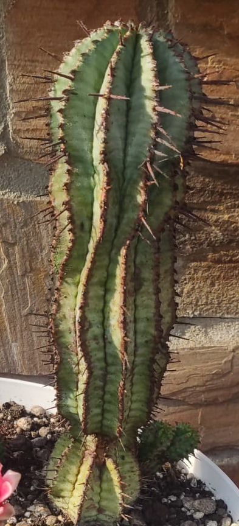

Nazwa zwyczajowa: afrykańska beczka mleczna
Rodzina: Euphorbiaceae
🌍 Występowanie
Pochodzi z południowo-wschodniej Afryki, głównie z Prowincji Przylądkowej Wschodniej (Eastern Cape) w RPA. Rośnie na kamienistych zboczach, często wśród kwarcytowych formacji, w suchym klimacie karoo.
🌱 Opis morfologiczny
- Kształt: kolumnowy, cylindryczny
- Wysokość: do 150 cm
- Średnica: 7–10 cm
- Żebra: 12–20, skręcone, głęboko bruzdowane
- Kolor: niebieskozielony, często pokryty białawym nalotem woskowym
- Ciernie: 1–3 na każdej brodawce, długość 4–10 mm, sztywne, ciemne
🌸 Kwiaty
- Typ: cyjatium (typowy dla Euphorbia)
- Kolor: ciemnopurpurowy z żółtymi pylnikami
- Rozmiar: do 7 mm
- Układ: pojedyncze lub po 2–3 na trwałych szypułkach
- Roślina dwupienna: osobne egzemplarze męskie i żeńskie
🍒 Owoce i rozmnażanie
- Owoce: kuliste, owłosione torebki o średnicy ok. 6 mm
- Rozmnażanie: przez nasiona (trudne do zdobycia) lub przez sadzonki – zalecane użycie ukorzeniacza
- Uwaga: wydziela toksyczne mleczko – ostrożność przy cięciu
🌞 Wymagania uprawowe
- Światło: pełne słońce lub jasne stanowisko
- Podłoże: dobrze przepuszczalne, piaszczysto-żwirowe
- Podlewanie: umiarkowane latem, suche zimą
- Temperatura: minimum -3°C (strefy USDA 9b–11b)
- Nawożenie: raz w miesiącu nawozem o połowie stężenia
🏆 Ciekawostki
Choć przypomina kaktusy, Euphorbia polygona należy do zupełnie innej rodziny. Jej purpurowe cyjatia są kluczowe w odróżnieniu od podobnych gatunków, np. Euphorbia horrida. W naturze często współwystępuje z pasożytniczym Viscum minimum.
📷 Zdjęcia z prywatnej kolekcji
Prezentowane poniżej fotografie pochodzą z prywatnych zbiorów...
